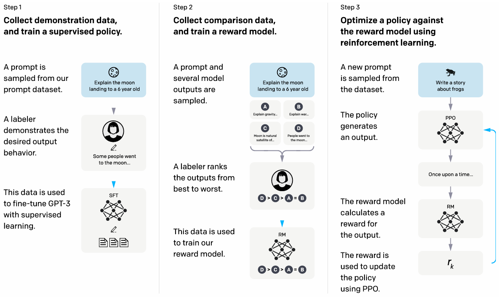

How InstructGPT is trained
Training Language Models with Human Feedback: Lessons from InstructGPT
In machine learning, bigger models usually perform better. GPT-3 was a scaled-up version of GPT-2 with more parameters and data, and it significantly outperformed its predecessor. This seemed to confirm that model size matters. But when I read a paper called “Training language models to follow instructions with human feedback” (https://arxiv.org/pdf/2203.02155) also known as the InstructGPT paper, I learned something interesting - a 1.3 billion parameter model trained with human feedback was preferred by evaluators over the 175 billion parameter GPT-3, despite being 100 times smaller. The model also learned to follow instructions generally and could apply this skill to tasks it wasn’t explicitly trained on, like coding and different languages. This made me curious about how these models actually learn and why human feedback could be so effective.
Training a large language model is like training puppies. Image generated with OpenAI.
How Large Language Models Are Trained
Training useful large language models like ChatGPT involves three main steps. It’s similar to training puppies.
Step 1: Pretraining
First, models are pretrained on massive amounts of text data from the internet. During this step, the model learns general knowledge by predicting the next token in a sentence. For example, it learns that ice is cold or that flowers smell nice. The model can complete sentences, but it doesn’t know how to follow instructions. This is like curious puppies learning about the world through their senses - they develop good knowledge about different objects, but they don’t understand human directions yet.
Step 2: Supervised Fine-tuning Next, the model learns to follow instructions through supervised fine-tuning. Instead of random web text, it trains on datasets like FLAN or T0, which contain prompts paired with target responses. Now the model can follow basic instructions. However, it’s not very helpful or safe. If someone asks harmful questions, the model might provide dangerous answers. This is like puppies learning to fetch sticks from different trainers, but they also follow bad instructions like sneaking into stores for snacks.
Step 3: Reinforcement Learning from Human Feedback (RLHF) Finally, the model trains with human feedback to learn preferred behaviors. It receives rewards for responses that humans prefer. This is like training puppies with treats - they get rewards when their actions align with the trainer’s intent. We will dig deeper into how this works in this article.
 A figure from the papre that describes the three steps to train.
Reinforcement Learning from Human Feedback
RLHF wasn’t invented for this paper. It was originally developed around 2017 for training robots in simulated environments and Atari games. For language models, researchers first applied it to specific tasks like text summarization in 2019-2020. What made the InstructGPT paper groundbreaking was applying RLHF to a broad range of instruction-following tasks at scale.
The researchers used a three-step process to train their models:
Step 1: Collect demonstration data and train a supervised policy
The researchers hired about 40 labelers from diverse backgrounds to create high-quality training examples. These labelers wrote prompts and demonstrated good responses, creating a dataset of 13,000 training examples. The team then fine-tuned GPT-3 using supervised learning on these demonstrations.
This is like having experienced dog trainers show puppies exactly how to behave in different situations. Instead of the puppies figuring things out on their own, they learn from watching good examples.
Step 2: Collect comparison data and train a reward model
Next, the researchers collected 33,000 prompts and had labelers rank between 4-9 responses for each prompt from best to worst. They used this data to train a separate reward model that learned to predict human preferences. Interestingly, they found that 6 billion parameter reward models worked better than 175 billion parameter ones - the larger models were too unstable during training.
The reward model uses a specific loss function:
loss(θ) = -1/(K choose 2) * E(x,yw,yl)~D[log(σ(rθ(x,yw) - rθ(x,yl)))]Where σ is the sigmoid function, rθ(x,y) is the reward score for prompt x and response y, yw is the preferred response, and yl is the less preferred one. The 1/(K choose 2) term normalizes for the different number of comparison pairs each prompt generates. The log(σ(…)) term represents the log likelihood of observing the human preference.
To prevent overfitting, they processed all comparison pairs from the same prompt together as one batch element, rather than shuffling them randomly.
This is like teaching our puppies’ trainer to recognize good behavior by comparing examples and learning what makes one action better than another.
Step 3: Optimize a policy against the reward model using reinforcement learning
Finally, they used the reward model to train the language model using “PPO-ptx” (Proximal Policy Optimization with pretraining mix). The model generates responses to prompts, gets scored by the reward model, and learns to maximize those scores through reinforcement learning.
The objective function for PPO-ptx combines three terms:
objective(φ) = E(x,y)~Dπφ^RL [rφ(x,y) - β*log(πφ^RL(y|x)/πSFT(y|x))] + γ*E(x)~Dpretrain[log πφ^RL(x)]Notations: - φ = parameters of the current RL model - πφ^RL = the current RL policy (model being trained) - πSFT = the supervised fine-tuned model from Step 1 - x = input prompt, y = generated response - Dπφ^RL = distribution of (prompt, response) pairs from the current RL model - Dpretrain = original pretraining data distribution
Let’s break down each term:
First term - rφ(x,y): Uses the reward model trained in Step 2 to score how good response y is for prompt x. This encourages generating responses that humans prefer.
Second term - KL divergence penalty: Measures how much the current model’s response distribution differs from the supervised model. KL divergence quantifies the “distance” between two probability distributions. When πφ^RL(y|x) becomes very different from πSFT(y|x), this penalty becomes large. β controls how much we penalize deviation.
Third term - Pretraining preservation: Takes text sequences x from the original pretraining data and evaluates how well the current model predicts them token by token. The model computes log πφ^RL(x) = Σ log P(token_i | previous tokens) for each sequence. Since log probabilities are always negative, this term pulls the objective down. γ controls the strength of this regularization to keep language modeling abilities intact.
This is like training puppies with treats (rewards) while making sure they don’t forget their basic obedience training (KL penalty) and still remember how to be dogs (pretraining preservation).
Results and Validation
The results were impressive. The 1.3B parameter InstructGPT model was preferred by human evaluators 85% of the time over the 175B GPT-3 model. This was surprising because the InstructGPT model was 100 times smaller.
To validate their approach, the researchers tested with “held-out” labelers - people who didn’t create any training data. These new evaluators still preferred InstructGPT at similar rates, showing the model wasn’t just overfitting to the preferences of the original labelers.
The model also showed improvements in truthfulness. On the TruthfulQA benchmark, InstructGPT generated truthful answers about twice as often as GPT-3. It also hallucinated less on closed-domain tasks, making up facts only 21% of the time compared to GPT-3’s 41%.
Limitations
Despite these improvements, InstructGPT still had several limitations. The model could still generate harmful content when explicitly instructed to do so. It also struggled with multiple constraints - for example, when asked to “list 10 movies made in the 1930s set in France,” it had difficulty satisfying all requirements simultaneously. This is like puppies that can follow simple commands but get confused when given multiple instructions at once.
The model also showed a tendency to “over-hedge” its answers. When asked simple questions, it would sometimes give unnecessarily cautious responses instead of direct answers. This happened because the labelers were trained to reward careful, humble responses. It’s like puppies that become overly hesitant because they’ve been rewarded for being cautious.
Additionally, the training data had limited diversity. The 40 labelers were mostly English-speaking people from the US and Southeast Asia, which may not represent all potential users of these models.
Future Perspectives
The InstructGPT paper opened up exciting possibilities for training language models. RLHF has become a standard technique for aligning AI systems with human preferences. We’ve seen this approach used in models like ChatGPT and Claude.
What’s particularly interesting is how the method could scale. The researchers found that alignment was cost-effective - the human feedback training required much less compute than the original pretraining. This suggests we can make models more helpful without massive increases in computational resources.
The generalization to unseen domains like coding and non-English languages also hints at something important. These models might be learning general principles about following instructions rather than just memorizing specific patterns. As AI systems become more capable, understanding how to align them with human intentions becomes increasingly critical.
Conclusion
The InstructGPT paper showed that making AI systems better isn’t just about scaling up - it’s about aligning them with what humans actually want. By using human feedback to train models, researchers demonstrated that a much smaller model could outperform a giant one. Just like how we value puppies that are helpful, honest, and harmless over those that are simply good at hunting or looking cute, what matters most in AI systems is how well they align with human values rather than just raw capability. This work laid the foundation for the conversational AI systems we use today. As I continue learning about computational biology and AI, I find it fascinating how techniques like RLHF are helping us build AI systems that are not just more capable, but also more helpful and aligned with human values.
Image generated with OpenAI.